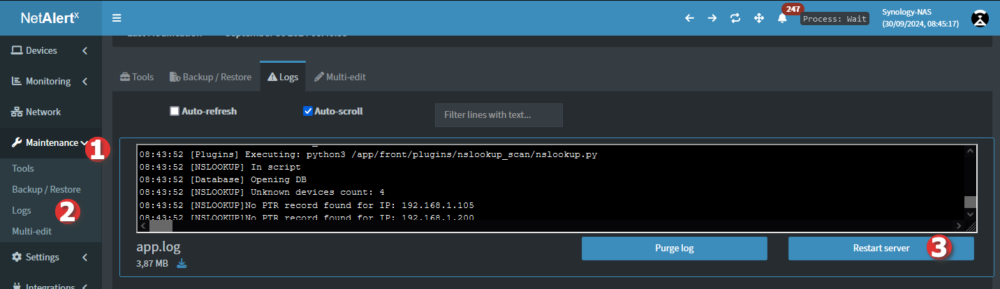

Development environment set up
Note
Replace /development with the path where your code files will be stored. The default container name is netalertx so there might be a conflict with your running containers.
Development Guidelines
Before starting development, please scan the below development guidelines.
Priority Order (Highest to Lowest)
- Fixing core bugs that lack workarounds.
- Adding core functionality that unlocks other features (e.g., plugins).
- Refactoring to enable faster development.
- UI improvements (PRs welcome).
Design Philosophy
Focus on core functionality and integrate with existing tools rather than reinventing the wheel.
Examples:
- Using Apprise for notifications instead of implementing multiple separate gateways.
- Implementing regex-based validation instead of one-off validation for each setting.
Note
UI changes have lower priority, however, PRs are welcome, but keep them small & focused.
Development Environment Set Up
1. Download the code:
mkdir /developmentcd /development && git clone https://github.com/jokob-sk/NetAlertX.git
2. Create a DEV .env_dev file
touch /development/.env_dev && sudo nano /development/.env_dev
The file content should be following, with your custom values.
#--------------------------------
#NETALERTX
#--------------------------------
TZ=Europe/Berlin
PORT=22222 # make sure this port is unique on your whole network
DEV_LOCATION=/development/NetAlertX
APP_DATA_LOCATION=/volume/docker_appdata
# Make sure your GRAPHQL_PORT setting has a port that is unique on your whole host network
APP_CONF_OVERRIDE={"GRAPHQL_PORT":"22223"}
# ALWAYS_FRESH_INSTALL=true # uncommenting this will always delete the content of /config and /db dirs on boot to simulate a fresh install
3. Create /db and /config dirs
Create a folder netalertx in the APP_DATA_LOCATION (in this example in /volume/docker_appdata) with 2 subfolders db and config.
mkdir /volume/docker_appdata/netalertxmkdir /volume/docker_appdata/netalertx/dbmkdir /volume/docker_appdata/netalertx/config
4. Run the container
cd /development/NetAlertX && sudo docker-compose --env-file ../.env_dev
You can then modify the python script without restarting/rebuilding the container every time. Additionally, you can trigger a plugin run via the UI:
Tips
A quick cheat sheet of useful commands.
Removing the container and image
A command to stop, remove the container and the image (replace netalertx and netalertx-netalertx with the appropriate values)
sudo docker container stop netalertx ; sudo docker container rm netalertx ; sudo docker image rm netalertx-netalertx
Restart the server backend
Most code changes can be tested without rebuilding the container. When working on the python server backend, you only need to restart the server.
- You can usually restart the backend via Maintenance > Logs > Restart server

-
If above doesn't work, SSH into the container and kill & restart the main script loop
-
sudo docker exec -it netalertx /bin/bash -
pkill -f "python /app/server" && python /app/server & -
If none of the above work, restart the docker caontainer.
-
This is usually the last resort as sometimes the Docker engine becomes unresponsive and the whole engine needs to be restarted.
Contributing & Pull Requests
Before submitting a PR, please ensure:
Changes are backward-compatible with existing installs.
No unnecessary changes are made.
New features are reusable, not narrowly scoped.
Features are implemented via plugins if possible.
Mandatory Test Cases
- Fresh install (no DB/config).
- Existing DB/config compatibility.
-
Notification testing:
- Apprise (e.g., Telegram)
- Webhook (e.g., Discord)
- MQTT (e.g., Home Assistant)
-
Updating Settings and their persistence.
- Updating a Device
- Plugin functionality.
- Error log inspection.